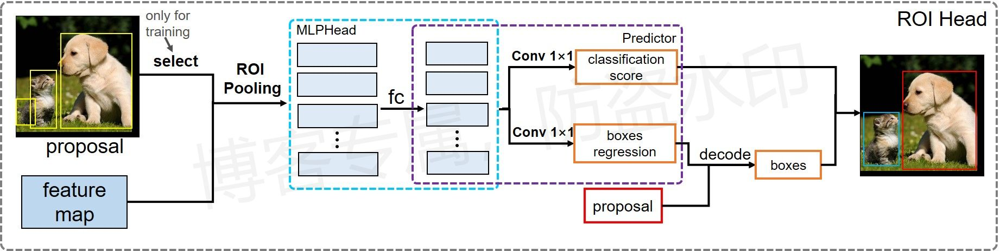
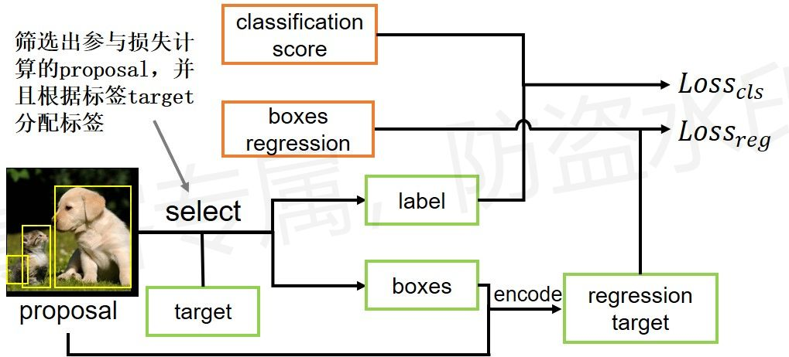

Faster R-CNN：ROI Head模块¶
简介¶
目的：为RPN模块提供的每个proposal进行类别预测和回归参数的预测，预测对象类别和微调RPN预测出来的边界区域
输入：特征图、proposal
输出：物体类别以及对应的边界框坐标
模块流程：

损失计算过程（这里与RPN模块类似）：

流程图原创，使用请告知
细节¶
网络结构
- 第二阶段的proposal相当于第一阶段的锚点；
- 第二阶段主要有两个功能：第一，对每个前景proposals做一次分类，第二，对每个预测的前景proposals做微调（二次调整边界框）；
- 在预测回归参数时，执行类别可知的预测，即每个proposal输出K组回归参数，K为类别数量，每组对应1个类别（对比RetinaNet中，每个锚点输出1组回归参数）；
- 在预测物体类别时，单独预测背景概率，即每个锚点输出K+1个数值（对比RetinaNet输出K个数值）。
训练阶段
- 训练阶段，首先要对RPN得到的proposals做筛选，筛选出参与损失计算的proposals，最后将筛选的proposals传入预测器；
- 筛选过程：每张图随机采样512个proposals进行训练，正负样本比例默认1:3，如果正样本少于128，则用负样本填充；
- 在锚点匹配中，与物体边界框IOU值大于0.5的锚点设置为前景锚点、IOU值小于0.5的设置为背景锚点。
测试阶段
- 测试阶段，将所有的proposals传入预测器；
- 将预测结果做后处理：结合proposals对预测的回归参数做解码得到bbox、移除背景信息、低概率目标、小尺寸目标、执行NMS、筛选出前N个目标作为最终的预测结果；
- 默认：低概率为0.05、NMS阈值为0.5、小尺寸为宽高小于1个像素的物体、N为100。
代码¶
注：ROI Head模块代码来源于PyTorch官方实现的Faster R-CNN算法，总的网络模型可由如下函数指令直接调取：
torchvision.models.detection.FasterRCNN()
参考链接：
- https://www.bilibili.com/video/BV1of4y1m7nj
- https://github.com/WZMIAOMIAO/deep-learning-for-image-processing
模块结构¶
class RoIHeads(torch.nn.Module):
__annotations__ = {
'box_coder': det_utils.BoxCoder,
'proposal_matcher': det_utils.Matcher,
'fg_bg_sampler': det_utils.BalancedPositiveNegativeSampler,
}
def __init__(self,
# ROI Pooling模块
box_roi_pool, # Multi-scale RoIAlign pooling
# 两层MLP，用于对pooling特征提特征
box_head, # TwoMLPHead
# 预测模块，用于预测物体类别和回归参数
box_predictor, # FastRCNNPredictor
# Faster R-CNN training
# 划分前景和背景的iou值
fg_iou_thresh, bg_iou_thresh, # default: 0.5, 0.5
# 用于训练的预测样本总数，以及正样本(前景)占比
batch_size_per_image, positive_fraction, # default: 512, 0.25
bbox_reg_weights, # None
# Faster R-CNN inference
# 低分数阈值，预测分数低于此值的被移除
score_thresh, # default: 0.05
# nms处理时的阈值
nms_thresh, # default: 0.5
# 获取预测分数前detection_per_img个预测目标
detection_per_img): # default: 100
super(RoIHeads, self).__init__()
# 计算两个框之间的IOU值
self.box_similarity = box_ops.box_iou
# 正负样本划分策略，即划分前、后景
self.proposal_matcher = det_utils.Matcher( # 将proposal划分为正负样本，参考两个阈值
fg_iou_thresh, # default: 0.5
bg_iou_thresh, # default: 0.5
allow_low_quality_matches=False)
# 确保包含固定的正负样本比例。采固定数量的样本(512)，以及正样本至少占比(0.25)
self.fg_bg_sampler = det_utils.BalancedPositiveNegativeSampler(
batch_size_per_image, # default: 512
positive_fraction) # default: 0.25
if bbox_reg_weights is None:
bbox_reg_weights = (10., 10., 5., 5.)
# 边界框与回归参数之间的相互转换
self.box_coder = det_utils.BoxCoder(bbox_reg_weights)
# 将输入的变量均转化为类属性
self.box_roi_pool = box_roi_pool # Multi-scale RoIAlign pooling
self.box_head = box_head # TwoMLPHead
self.box_predictor = box_predictor # FastRCNNPredictor
self.score_thresh = score_thresh # default: 0.05
self.nms_thresh = nms_thresh # default: 0.5
self.detection_per_img = detection_per_img # default: 100
def forward(self,
features, # type: Dict[str, Tensor]
proposals, # type: List[Tensor]
image_shapes, # type: List[Tuple[int, int]]
targets=None # type: Optional[List[Dict[str, Tensor]]]
):
# type: (...) -> Tuple[List[Dict[str, Tensor]], Dict[str, Tensor]]
"""
Arguments:
features (List[Tensor]) # 不同的特征层，数据类型为字典格式
proposals (List[Tensor[N, 4]]) # 从RPN得到的预测框坐标，对于原图的绝对坐标，非回归参数
image_shapes (List[Tuple[H, W]]) # 每张图的输入大小
targets (List[Dict]) # 标签
"""
# 检查targets的数据类型是否正确
if targets is not None:
for t in targets:
floating_point_types = (torch.float, torch.double, torch.half)
assert t["boxes"].dtype in floating_point_types, "target boxes must of float type"
assert t["labels"].dtype == torch.int64, "target labels must of int64 type"
if self.training:
# 对样本进行筛选，划分正负样本，统计对应gt的标签以及边界框回归信息。传入预测的坐标框，标签
# regression_targets表示由RPN得到的边界框到真实标签的边界框之间的真正回归参数应该是多少，ROI的预测就该向这里靠近，用于修正RPN的错误。
# 因此，这里regression_targets就是ROI的回归参数标签
proposals, labels, regression_targets = self.select_training_samples(proposals, targets)
else:
labels = None
regression_targets = None
# 将采集样本通过Multi-scale RoIAlign pooling层
# 这里输入的特征图组必须是字典格式的，键表示特征图名称，值表示相应的特征图
# 得到每个区域的特征,相当于将目标框的特征裁剪出来
# box_features_shape: [num_proposals, channel, height, width]
box_features = self.box_roi_pool(features, proposals, image_shapes)
# 将裁剪到的特征传入MLP，每层均由一个线性回归运算构成
# box_features_shape: [num_proposals, representation_size]
box_features = self.box_head(box_features)
# 接着分别预测目标类别和边界框回归参数。预测类别和回归参数
class_logits, box_regression = self.box_predictor(box_features)
result = torch.jit.annotate(List[Dict[str, torch.Tensor]], [])
losses = {}
# 如果是训练过程，则需要计算损失，无需对结果进行后处理
if self.training:
assert labels is not None and regression_targets is not None
# 计算损失，这里正负样本已经筛选好了，可以直接计算
loss_classifier, loss_box_reg = fastrcnn_loss(
class_logits, box_regression, labels, regression_targets)
losses = {
"loss_classifier": loss_classifier,
"loss_box_reg": loss_box_reg
}
# 测试过程只需要一个后处理，无需计算损失
else:
# 对预测结果的后处理过程，主要是将回归参数转化为边界框信息，并且映射到原始图像的尺度
boxes, scores, labels = self.postprocess_detections(class_logits, box_regression, proposals, image_shapes)
num_images = len(boxes)
for i in range(num_images):
result.append(
{
"boxes": boxes[i],
"labels": labels[i],
"scores": scores[i],
}
)
# 返回预测结果与损失
return result, losses
筛选目标区域¶
这里只针对训练过程
def select_training_samples(self,
proposals, # type: List[Tensor]
targets # type: Optional[List[Dict[str, Tensor]]]
):
# type: (...) -> Tuple[List[Tensor], List[Tensor], List[Tensor]]
"""
划分正负样本，统计对应gt的标签以及边界框回归信息
list元素个数为batch_size
Args:
proposals: rpn预测的boxes，目标边界框
targets: 标签
Returns:
返回筛选后的预测框proposal、对应的类别标签、对应的回归参数标签
"""
# 检查target数据是否为空，是否有boxes和labels
self.check_targets(targets)
assert targets is not None
# 得到数据类型和存储设备
dtype = proposals[0].dtype
device = proposals[0].device
# 获取标注好的boxes以及labels信息
gt_boxes = [t["boxes"].to(dtype) for t in targets]
gt_labels = [t["labels"] for t in targets]
# append ground-truth bboxes to proposal
# 将gt_boxes拼接到proposal后面(为啥)
proposals = self.add_gt_proposals(proposals, gt_boxes)
# get matching gt indices for each proposal
# 为每个proposal匹配对应的gt_box，并且划分正负样本，得到RPN每个预测框的类别标签label
# 传入边界框、边界框标签以及类别标签。返回匹配到的gt物体索引和预测框类别
matched_idxs, labels = self.assign_targets_to_proposals(proposals, gt_boxes, gt_labels)
# sample a fixed proportion of positive-negative proposals
# 按给定数量和比例采样正负样本
sampled_inds = self.subsample(labels)
matched_gt_boxes = []
num_images = len(proposals)
# 遍历每张图像，按batch遍历
for img_id in range(num_images):
# 获取每张图像参与运算的预测框样本索引
img_sampled_inds = sampled_inds[img_id]
# 获取对应正负样本的proposals信息
proposals[img_id] = proposals[img_id][img_sampled_inds]
# 获取对应正负样本的真实类别信息
labels[img_id] = labels[img_id][img_sampled_inds]
# 获取对应正负样本的gt索引信息，即图像中与第几个对象相匹配
matched_idxs[img_id] = matched_idxs[img_id][img_sampled_inds]
# 边界框信息
gt_boxes_in_image = gt_boxes[img_id]
if gt_boxes_in_image.numel() == 0: # 如果没有物体，则边界框索引设为0
gt_boxes_in_image = torch.zeros((1, 4), dtype=dtype, device=device)
# 获取对应正负样本的gt box信息，即每个proposal的边界框标签，背景默认为第一个对象的边界框
matched_gt_boxes.append(gt_boxes_in_image[matched_idxs[img_id]])
# 根据gt(标签)和proposal(RPN预测)计算边框回归参数（针对gt的），用于进一步修正RPN得到的边界框坐标
# 这里与之前RPN中类似，RPN中也有一个修正作用，修正预先设定的标准锚点框到准确的目标框，这里是修正RPN预测的目标框到准确的目标框。整个Faster RCNN会修正两次
# 只计算对所有proposal都计算一次回归参数，但是在计算损失时只用到正样本去计算(与RPN模块中的损失计算方法类似)，用作第二阶段的回归参数标签
regression_targets = self.box_coder.encode(matched_gt_boxes, proposals)
return proposals, labels, regression_targets
对参与损失计算的正负样本采样
def subsample(self, labels):
# type: (List[Tensor]) -> List[Tensor]
# BalancedPositiveNegativeSampler，和RPN中使用的方法类似，只是参数不同
sampled_pos_inds, sampled_neg_inds = self.fg_bg_sampler(labels)
sampled_inds = []
# 遍历每张图片的正负样本索引
for img_idx, (pos_inds_img, neg_inds_img) in enumerate(zip(sampled_pos_inds, sampled_neg_inds)):
# 记录所有采集样本索引（包括正样本和负样本）
img_sampled_inds = torch.where(pos_inds_img | neg_inds_img)[0] # 得到参与后续运算的样本索引
sampled_inds.append(img_sampled_inds)
return sampled_inds
为每个RPN预测得到的边界框(proposal)匹配标签
def assign_targets_to_proposals(self, proposals, gt_boxes, gt_labels):
# type: (List[Tensor], List[Tensor], List[Tensor]) -> Tuple[List[Tensor], List[Tensor]]
"""
为每个proposal匹配对应的gt_box，并划分到正负样本中
Args:
proposals: 预测得到的边界框
gt_boxes: 边界框标签
gt_labels: 类别标签
Returns:
"""
matched_idxs = []
labels = []
# 遍历每张图像的proposals, gt_boxes, gt_labels信息
for proposals_in_image, gt_boxes_in_image, gt_labels_in_image in zip(proposals, gt_boxes, gt_labels):
if gt_boxes_in_image.numel() == 0: # 如果该张图像中没有gt框，则目标框应该全为背景
# background image
device = proposals_in_image.device
clamped_matched_idxs_in_image = torch.zeros(
(proposals_in_image.shape[0],), dtype=torch.int64, device=device
)
labels_in_image = torch.zeros(
(proposals_in_image.shape[0],), dtype=torch.int64, device=device
)
else:
# set to self.box_similarity when https://github.com/pytorch/pytorch/issues/27495 lands
# 计算proposal与每个gt_box的iou重合度，match_quality_matrix尺寸为[ge_box边界框标签数量，RPN预测框的数量(拼接后的)]
# 这里与RPN中计算锚点与边界框标签重合度类似
match_quality_matrix = box_ops.box_iou(gt_boxes_in_image, proposals_in_image)
# 计算proposal与每个gt_box匹配的iou最大值，并记录索引，
# iou > high_threshold索引值为对象的索引，iou < low_threshold索引值为 -1， low_threshold <= iou < high_threshold索引值为 -2
# 这里与RPN中的匹配类似
matched_idxs_in_image = self.proposal_matcher(match_quality_matrix)
# 限制最小值，防止匹配标签时出现越界的情况
# 注意-1, -2对应的gt索引会调整到0，这里和RPN中一样，主要用于为每个预测框匹配回归参数，-1和-2不产生回归损失，因此这里无影响
clamped_matched_idxs_in_image = matched_idxs_in_image.clamp(min=0)
# 获取预测框proposal匹配到的类别标签，此时背景和丢弃的样本都被赋值为第一个物体的类别，后续还会再处理
labels_in_image = gt_labels_in_image[clamped_matched_idxs_in_image]
labels_in_image = labels_in_image.to(dtype=torch.int64)
# label background (below the low threshold)
# bg_inds背景样本的索引，标签设置为0
bg_inds = matched_idxs_in_image == self.proposal_matcher.BELOW_LOW_THRESHOLD # -1
labels_in_image[bg_inds] = 0
# label ignore proposals (between low and high threshold)
# ignore_inds丢弃样本的索引，标签设置为-1
ignore_inds = matched_idxs_in_image == self.proposal_matcher.BETWEEN_THRESHOLDS # -2
labels_in_image[ignore_inds] = -1 # -1 is ignored by sampler
matched_idxs.append(clamped_matched_idxs_in_image)
labels.append(labels_in_image)
return matched_idxs, labels
ROI Pooling模块¶
可直接由如下函数直接调取
torchvision.ops.MultiScaleRoIAlign(featmap_names, output_size, sampling_ratio, canonical_scale = 224, canonical_level = 4)
featmap_names：用于池化的特征图名称（键），因此输入时需要传入字典格式的数据，值表示相应的特征图output_size：输出特征的尺寸sampling_ratio：表示采样率
在做roi_pooling时，输入特征图字典的键必须与`featmap_names对应起来
ROI检测头¶
这里ROI检测头会为每个proposal均对每个类别预测一次类别分数以及相应的边界框回归参数，具体见预测模块中的程序。
两层MLP结构
class TwoMLPHead(nn.Module):
"""
Standard heads for FPN-based models
Arguments:
in_channels (int): 输入特征图的通道数
representation_size (int): 隐藏节点的数量
"""
def __init__(self, in_channels, representation_size):
super(TwoMLPHead, self).__init__()
# 定义两层线性回归
self.fc6 = nn.Linear(in_channels, representation_size)
self.fc7 = nn.Linear(representation_size, representation_size)
def forward(self, x):
# 先将特征拉直，第一个维度为(batch*检测头数量)
# 注意，这里并不是经过全局平均池化，而是直接将特征拉直
x = x.flatten(start_dim=1)
# 依次经过fc和relu
x = F.relu(self.fc6(x))
x = F.relu(self.fc7(x))
return x
预测模块
class FastRCNNPredictor(nn.Module):
"""
Standard classification + bounding box regression layers
for Fast R-CNN.
Arguments:
in_channels (int): 输入的节点数量
num_classes (int): 分类数量，包括背景
"""
def __init__(self, in_channels, num_classes):
super(FastRCNNPredictor, self).__init__()
# 定义两层线性回归，分别预测每个边界框的所述类别，以及边界框回归参数
# 这里有预测了一次回归参数，用于微调RPN预测的物体边界框
# 注意，这里对于每个边界框均为所有类别预测一次分数以及对应的回归参数
self.cls_score = nn.Linear(in_channels, num_classes)
self.bbox_pred = nn.Linear(in_channels, num_classes * 4)
def forward(self, x):
if x.dim() == 4:
assert list(x.shape[2:]) == [1, 1]
# 将特征拉直
x = x.flatten(start_dim=1)
# 依次预测得分和对应的边界框回归参数
scores = self.cls_score(x)
bbox_deltas = self.bbox_pred(x)
return scores, bbox_deltas
ROI损失的计算¶
这里只针对训练过程
def fastrcnn_loss(class_logits, box_regression, labels, regression_targets):
# type: (Tensor, Tensor, List[Tensor], List[Tensor]) -> Tuple[Tensor, Tensor]
"""
Computes the loss for Faster R-CNN.
Arguments:
class_logits : 预测的类别概率信息，shape=[num_anchors, num_classes]
box_regression : 预测的边目标界框回归参数
labels : 真实的类别信息(即标签)
regression_targets : 真实的目标边界框回归参数
Returns:
classification_loss (Tensor)
box_loss (Tensor)
"""
# 将同一个batch里的标签沿第一维度合并，第一维度尺寸为batch*512(512为参与损失计算默认的proposal数量)
labels = torch.cat(labels, dim=0)
regression_targets = torch.cat(regression_targets, dim=0)
# 计算类别损失信息，label为0时表示背景类别
classification_loss = F.cross_entropy(class_logits, labels)
# 得到标签类别大于0的proposal索引，即非背景类别，用于计算回归参数损失
sampled_pos_inds_subset = torch.where(torch.gt(labels, 0))[0]
# 得到标签类别大于0的类别信息，用于索引回归参数
# 因为对于每个proposal，网络会为每个类别均预测一个回归参数，因此需要利用类别信息将指定类别的回归参数提取出来
labels_pos = labels[sampled_pos_inds_subset]
# shape=[num_proposal, num_classes]
N, num_classes = class_logits.shape
# 改变形状
box_regression = box_regression.reshape(N, -1, 4)
# 计算边界框损失信息
box_loss = det_utils.smooth_l1_loss(
# 获取指定索引proposal的指定类别回归参数的预测信息，索引两次
box_regression[sampled_pos_inds_subset, labels_pos],
# 回归参数的标签
regression_targets[sampled_pos_inds_subset],
beta=1 / 9,
size_average=False,
) / labels.numel()
return classification_loss, box_loss
后处理模块¶
这里只针对测试过程，包括：
- 根据RPN模块中预测的边界框proposal以及ROI Head预测的回归参数计算出最终bbox坐标
- 将越界(超出图像范围)的边界框坐标调整到边界上
- 对预测类别结果进行softmax处理，得到概率值
- 移除概率过小的目标（先经过softmax，再进行移除）
- 移除所有背景的预测信息
- 移除小尺寸目标
- 执行非极大值抑制处理（NMS），并且按预测分数进行排序
- 根据排序情况选取前topk个目标
def postprocess_detections(self,
class_logits, # type: Tensor
box_regression, # type: Tensor
proposals, # type: List[Tensor]
image_shapes # type: List[Tuple[int, int]]
):
# type: (...) -> Tuple[List[Tensor], List[Tensor], List[Tensor]]
"""
Args:
class_logits: 网络预测类别概率信息
box_regression: 网络预测的边界框回归参数
proposals: rpn输出的proposal
image_shapes: 打包成batch前每张图像的宽高
Returns:
"""
device = class_logits.device
# 预测目标类别数
num_classes = class_logits.shape[-1]
# 获取每张图像的预测bbox数量
boxes_per_image = [boxes_in_image.shape[0] for boxes_in_image in proposals]
# 根据proposal以及预测的回归参数计算出最终bbox坐标
pred_boxes = self.box_coder.decode(box_regression, proposals)
# 对预测类别结果进行softmax处理，得到概率值，后续再将概率过小目标的删除
pred_scores = F.softmax(class_logits, -1)
# split boxes and scores per image
# 根据每张图像的预测bbox数量分割结果
pred_boxes_list = pred_boxes.split(boxes_per_image, 0)
pred_scores_list = pred_scores.split(boxes_per_image, 0)
all_boxes = []
all_scores = []
all_labels = []
# 遍历每张图像预测信息
for boxes, scores, image_shape in zip(pred_boxes_list, pred_scores_list, image_shapes):
# 裁剪预测的boxes信息，将越界的坐标调整到图片边界上
boxes = box_ops.clip_boxes_to_image(boxes, image_shape)
# 为每个预测分数创建对应的类别信息，这里roi head会为每个proposal均对所有类别预测一次(分数、回归参数)
labels = torch.arange(num_classes, device=device)
labels = labels.view(1, -1).expand_as(scores)
# remove prediction with the background label
# 移除索引为0的所有预测信息（0代表背景）
boxes = boxes[:, 1:]
scores = scores[:, 1:]
labels = labels[:, 1:]
# 将所有的预测类别变为独立的个体，第一维度尺寸均为:proposal数量*分类数量
boxes = boxes.reshape(-1, 4)
scores = scores.reshape(-1)
labels = labels.reshape(-1)
# remove low scoring boxes
# 移除低概率目标，self.scores_thresh=0.05
# gt: Computes input > other element-wise.
inds = torch.where(torch.gt(scores, self.score_thresh))[0]
boxes, scores, labels = boxes[inds], scores[inds], labels[inds]
# remove empty boxes
# 移除小目标
keep = box_ops.remove_small_boxes(boxes, min_size=1.)
boxes, scores, labels = boxes[keep], scores[keep], labels[keep]
# non-maximun suppression, independently done per class
# 执行nms处理，执行后的结果会按照scores从大到小进行排序返回
keep = box_ops.batched_nms(boxes, scores, labels, self.nms_thresh)
# 获取scores排在前topk个预测目标
keep = keep[:self.detection_per_img]
boxes, scores, labels = boxes[keep], scores[keep], labels[keep]
# 将预测结果储存
all_boxes.append(boxes)
all_scores.append(scores)
all_labels.append(labels)
return all_boxes, all_scores, all_labels
调整越界边界框
def clip_boxes_to_image(boxes, size):
# type: (Tensor, Tuple[int, int]) -> Tensor
"""
输入裁剪预测的boxes信息，将越界的坐标调整到图片边界上
Arguments:
boxes (Tensor[N, 4]): 边界框坐标 (x1, y1, x2, y2)
size (Tuple[height, width]): 图片尺寸
Returns:
clipped_boxes (Tensor[N, 4]): 调整后的坐标
"""
dim = boxes.dim()
# 得到x坐标，尺寸为(边界框数量,2)
boxes_x = boxes[..., 0::2]
# 得到y坐标，尺寸和x尺寸相同
boxes_y = boxes[..., 1::2]
# 得到高、宽，用于限制x，y坐标
height, width = size
if torchvision._is_tracing():
boxes_x = torch.max(boxes_x, torch.tensor(0, dtype=boxes.dtype, device=boxes.device))
boxes_x = torch.min(boxes_x, torch.tensor(width, dtype=boxes.dtype, device=boxes.device))
boxes_y = torch.max(boxes_y, torch.tensor(0, dtype=boxes.dtype, device=boxes.device))
boxes_y = torch.min(boxes_y, torch.tensor(height, dtype=boxes.dtype, device=boxes.device))
else:
# 一般执行这里
# 限制x坐标范围在[0,width]之间
boxes_x = boxes_x.clamp(min=0, max=width)
# 限制y坐标范围在[0,height]之间
boxes_y = boxes_y.clamp(min=0, max=height)
# 合并
clipped_boxes = torch.stack((boxes_x, boxes_y), dim=dim)
# 将数据形状变为与输入数据相同的形状
return clipped_boxes.reshape(boxes.shape)
初步完稿于：2022年2月16日